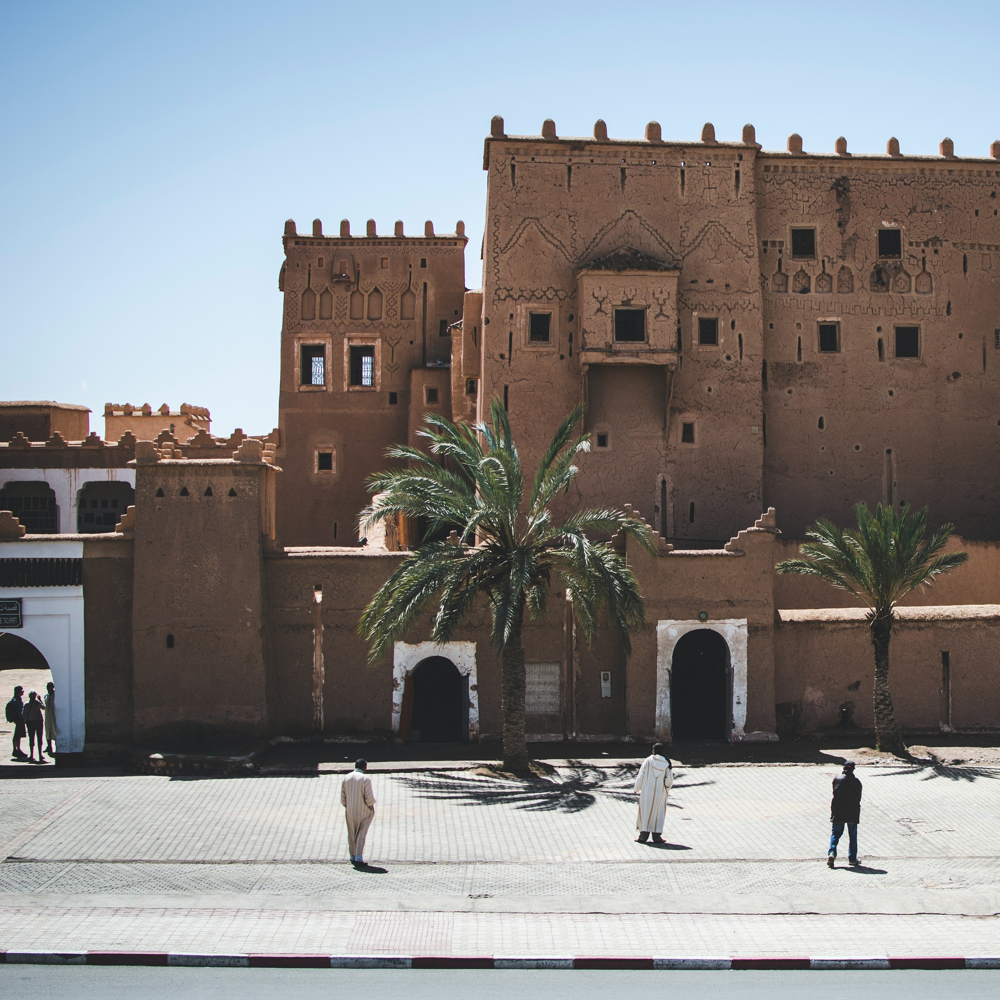
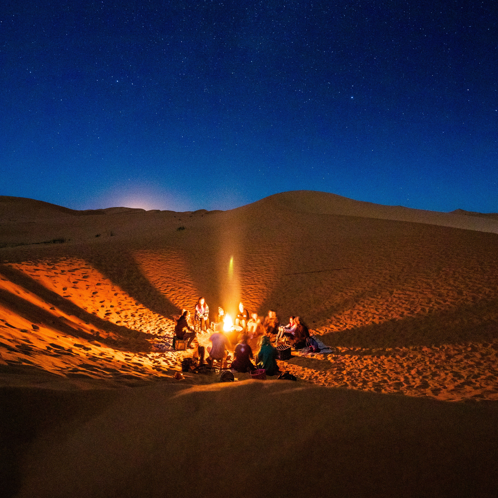

Morocco
From Marrakech's Medina to the Sahara's Sands
My Moroccan odyssey began in the heart of Marrakech, a city where history and culture are etched into every corner. The bustling medina, with its labyrinthine alleys, drew me in like a siren's call. Strolling through the famed Jardin Majorelle, a haven of lush gardens and cobalt blue structures, I marveled at the intersection of art and nature. In Marrakech, I couldn't resist the allure of a traditional Moroccan cooking class. Under the guidance of a skilled local chef, I crafted tagines and pastillas, infusing each dish with a medley of spices and flavors that danced on my palate.
 My next stop took me to the ancient city of Fez, where the medina's narrow lanes felt like stepping back in time. The intricate tile work and ornate architecture of the Bou Inania Madrasa left me in awe, a testament to Morocco's rich artistic heritage. In Fez, I immersed myself in the age-old art of calligraphy. Guided by a master calligrapher, I learned to shape Arabic letters with grace and precision, an experience that deepened my appreciation for the region's artistic traditions.
Leaving the cities behind, I ventured into the vastness of the Sahara Desert. The towering dunes of Merzouga's Erg Chebbi welcomed me with open arms. Riding a camel into the dunes during the golden hours of sunset was a moment of pure magic. The shifting sands and the play of light and shadow painted a surreal picture of boundless beauty. At night, I joined a desert camp under a star-studded sky. The haunting melodies of Berber music and stories around the campfire were an intimate glimpse into the nomadic way of life. Sleeping in a traditional desert tent beneath the Milky Way was a humbling and soul-enriching experience.
My journey continued into the High Atlas Mountains, where the picturesque village of Imlil served as my base for exploration. Hiking through the rugged trails, I encountered Berber communities and enjoyed breathtaking panoramas. In the Atlas Mountains, I couldn't resist the allure of tasting traditional Berber cuisine. I joined a local family for a meal, savoring tagine cooked over an open fire and fresh mint tea. The warmth of their hospitality was as heartwarming as the meal itself.
 Nestled in the Rif Mountains, Chefchaouen awaited with its azure-painted streets and tranquil ambiance. Exploring the town's vibrant souks, I found treasures in every nook and cranny, from handmade textiles to local handicrafts. In Chefchaouen, I took part in a pottery workshop, learning the art of crafting traditional Moroccan ceramics. My hands molded intricate designs onto clay, creating my own piece of Moroccan artistry to cherish.
My journey concluded in the coastal city of Casablanca, where modernity seamlessly intertwined with Morocco's rich heritage. Visiting the grand Hassan II Mosque, with its stunning architecture and sweeping sea views, was a testament to the country's commitment to both tradition and progress. In Casablanca, I attended a traditional Gnawa music performance, where the rhythmic beats and hypnotic melodies transported me to a world of spiritual resonance. It was a soul-stirring experience that celebrated Morocco's diverse musical heritage.
As I reflect on my Moroccan adventure, I'm reminded that Morocco is a land where the past meets the present, where ancient traditions thrive alongside modern innovations. From the bustling markets of Marrakech to the serene Sahara Desert and the tranquil blue streets of Chefchaouen, every step was a revelation. Morocco's culture, cuisine, and landscapes are a testament to the country's enduring allure, a place where wanderers like me can uncover the secrets of North Africa.
Join me in my future travels as I continue to explore the diverse tapestry of Africa, sharing its hidden gems and the beauty of its cultures and landscapes with the world. Until next time, keep your wanderlust alive and your heart open to the wonders of the world.